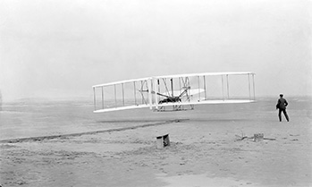
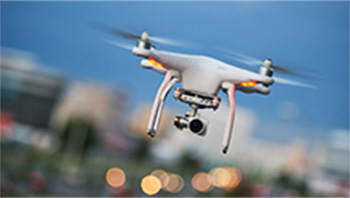

История авиации насчитывает более двух тысяч лет, начиная с самых ранних форм воздухоплавания, таких
как воздушные змеи и попытки прыжков с башни на парашюте, и заканчивая сверхзвуковыми и гиперзвуковыми
полетами на самолетах тяжелее воздуха.
Первые упоминания о воздушных змеях в Китае датируются несколькими столетиями до нашей эры и постепенно
распространились по всему миру. Считается, что это самый ранний пример рукотворного полета. Мечта Леонардо
да Винчи о полете, высказанная им в XV веке, нашла выражение в нескольких рациональных конструкциях, которые,
однако, основывались на несовершенных научных знаниях.
В конце 18-го века братья Монгольфье изобрели воздушный шар, наполняемый горячим воздухом и начали совершать на нем пилотируемые полеты. Почти в то же самое время открытие водорода привело к изобретению водородного аэростата. Различные теории механики, разработанные физиками в тот же период времени, в ч астности гидродинамика и законы движения Ньютона, легли в основу современной аэродинамики, в первую очередь благодаря сэру Джорджу Кейли. Воздушные шары, как свободно летающие, так и привязные, стали использоваться в военных целях с конца 18-го века, когда французское правительство создало компании по производству воздушных шаров во время Французской революции.
Эксперименты с планерами заложили основу для изучения динамики летательных аппаратов тяжелее воздуха, в первую очередь благодаря Кейли, Отто Лилиенталю и Октаву Шанюте. К началу 20-го века достижения в области двигателестроения и аэродинамики впервые сделали возможным контролируемый полет с использованием двигателя. В 1903 году, после проведения новаторских исследований и экспериментов с конструкцией крыла и управлением самолетом, братья Райт успешно объединили все необходимые элементы для создания и управления первым самолетом. К 1909 году была создана базовая конфигурация с характерным хвостовым оперением, за которой последовали быстрые усовершенствования конструкции и характеристик, чему способствовало развитие более мощных двигателей.
Первыми крупными воздушными судами были жесткие дирижабли, сконструированные Фердинандом фон Цеппелином, которые вскоре стали синонимом слова дирижабль и доминировали в сфере дальних перелетов до 1930-х годов, когда стали популярны большие летающие лодки. После Второй мировой войны летающие лодки, в свою очередь, были заменены наземными самолетами, а новый и чрезвычайно мощный реактивный двигатель произвел революцию в сфере авиаперевозок и военной авиации.
Во второй половине 20-го века появление цифровой электроники привело к значительному прогрессу в области авиационных приборов и систем дистанционного управления. В 21-м веке беспилотные летательные аппараты стали широко использоваться в военных целях, а также для гражданских нужд и отдыха. Благодаря цифровому управлению стали возможны полеты на нестабильных по своей природе летательных аппаратах, таких как летающие крылья.
